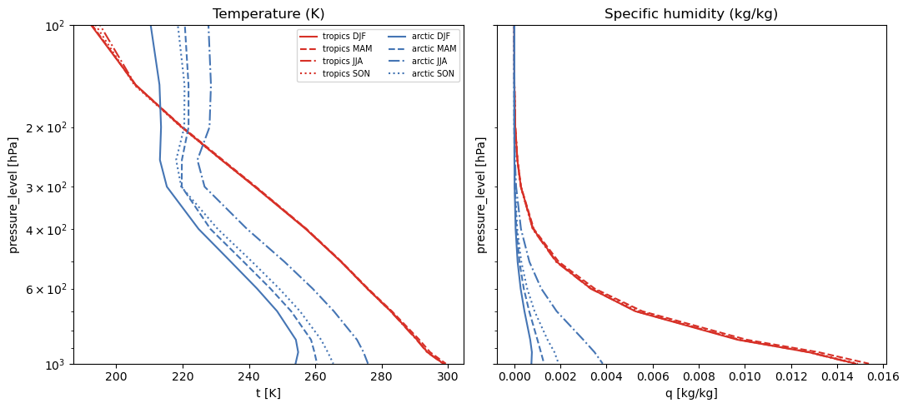

Processing: ERA5 Regional Mean Profiles for Libradtran#
This notebook prepares seasonal climatological temperature and humidity profiles for two regions — tropics (20°S–20°N) and Arctic (70°N–85°N) — from the ARCO ERA5 reanalysis archive and saves them in the format expected by pyRadtran.
The output (data/era5_region_profiles.nc) can be loaded directly in
lapse_rate_feedback.ipynb to replace the single ARCO snapshot.
The workflow mirrors sea_ice_era5.ipynb: download a regional subset from Google
Cloud Storage, group by season, compute means, rename to pyRadtran conventions, save.
Warning
This notebook downloads ERA5 data from Google Cloud Storage. The subset used here (~2000–2020, two lat/lon boxes, 6-hourly, 64×128 grid) is manageable on a laptop with ~8 GB RAM, but will take several minutes to load. Use the Dask cluster cell below if you want faster parallel loading.
Setup#
import numpy as np
import pandas as pd
import xarray as xr
import gcsfs
import matplotlib.pyplot as plt
from pathlib import Path
OUTPUT_PATH = Path("data/era5_region_profiles.nc")
OUTPUT_PATH.parent.mkdir(parents=True, exist_ok=True)
Load ARCO ERA5 (6-hourly, coarse resolution)#
We use the 6-hourly 64×128 equiangular ARCO store — the same one used in
sea_ice_era5.ipynb. It is much smaller than the high-resolution 1-hourly
store and sufficient for computing seasonal mean profiles.
gcs = gcsfs.GCSFileSystem(token="anon")
path = "gs://gcp-public-data-arco-era5/ar/1959-2022-6h-128x64_equiangular_with_poles_conservative.zarr/"
full_era5 = xr.open_zarr(gcs.get_mapper(path), chunks="auto")
print(list(full_era5.data_vars))
full_era5
/home/josh/micromamba/envs/mamba_josh/lib/python3.13/site-packages/pyproj/network.py:59: UserWarning: pyproj unable to set PROJ database path.
_set_context_ca_bundle_path(ca_bundle_path)
['10m_u_component_of_wind', '10m_v_component_of_wind', '10m_wind_speed', '2m_temperature', 'angle_of_sub_gridscale_orography', 'anisotropy_of_sub_gridscale_orography', 'geopotential', 'geopotential_at_surface', 'high_vegetation_cover', 'lake_cover', 'lake_depth', 'land_sea_mask', 'low_vegetation_cover', 'mean_sea_level_pressure', 'sea_ice_cover', 'sea_surface_temperature', 'slope_of_sub_gridscale_orography', 'soil_type', 'specific_humidity', 'standard_deviation_of_filtered_subgrid_orography', 'standard_deviation_of_orography', 'surface_pressure', 'temperature', 'toa_incident_solar_radiation', 'toa_incident_solar_radiation_12hr', 'toa_incident_solar_radiation_24hr', 'toa_incident_solar_radiation_6hr', 'total_cloud_cover', 'total_column_water_vapour', 'total_precipitation_12hr', 'total_precipitation_24hr', 'total_precipitation_6hr', 'type_of_high_vegetation', 'type_of_low_vegetation', 'u_component_of_wind', 'v_component_of_wind', 'vertical_velocity', 'wind_speed']
<xarray.Dataset> Size: 326GB
Dimensions: (time: 92040,
longitude: 128,
latitude: 64, level: 13)
Coordinates:
* latitude (latitude) float64 512B ...
* level (level) int64 104B 50 ....
* longitude (longitude) float64 1kB ...
* time (time) datetime64[ns] 736kB ...
Data variables: (12/38)
10m_u_component_of_wind (time, longitude, latitude) float32 3GB dask.array<chunksize=(40, 128, 64), meta=np.ndarray>
10m_v_component_of_wind (time, longitude, latitude) float32 3GB dask.array<chunksize=(40, 128, 64), meta=np.ndarray>
10m_wind_speed (time, longitude, latitude) float32 3GB dask.array<chunksize=(40, 128, 64), meta=np.ndarray>
2m_temperature (time, longitude, latitude) float32 3GB dask.array<chunksize=(40, 128, 64), meta=np.ndarray>
angle_of_sub_gridscale_orography (longitude, latitude) float32 33kB dask.array<chunksize=(128, 64), meta=np.ndarray>
anisotropy_of_sub_gridscale_orography (longitude, latitude) float32 33kB dask.array<chunksize=(128, 64), meta=np.ndarray>
... ...
type_of_high_vegetation (longitude, latitude) float32 33kB dask.array<chunksize=(128, 64), meta=np.ndarray>
type_of_low_vegetation (longitude, latitude) float32 33kB dask.array<chunksize=(128, 64), meta=np.ndarray>
u_component_of_wind (time, level, longitude, latitude) float32 39GB dask.array<chunksize=(40, 13, 128, 64), meta=np.ndarray>
v_component_of_wind (time, level, longitude, latitude) float32 39GB dask.array<chunksize=(40, 13, 128, 64), meta=np.ndarray>
vertical_velocity (time, level, longitude, latitude) float32 39GB dask.array<chunksize=(40, 13, 128, 64), meta=np.ndarray>
wind_speed (time, level, longitude, latitude) float32 39GB dask.array<chunksize=(40, 13, 128, 64), meta=np.ndarray>Optional: Dask cluster for faster loading#
Uncomment the cell below if you want to parallelise the data download.
# from dask.distributed import Client, LocalCluster
#
# cluster = LocalCluster(
# n_workers=8,
# threads_per_worker=1,
# memory_limit="auto",
# local_directory="/tmp/dask",
# dashboard_address=":8787",
# )
# client = Client(cluster)
# print(client)
Select regional subsets (2000–2020)#
We restrict to 2000–2020 — long enough for a stable climatology, short enough
to stay manageable. Pressure-level variables (temperature, specific_humidity,
geopotential) plus the surface variable sea_surface_temperature are kept.
VARS = ["temperature", "specific_humidity"]
if "geopotential" in full_era5.data_vars:
VARS.append("geopotential")
if "sea_surface_temperature" in full_era5.data_vars:
VARS.append("sea_surface_temperature")
print("Using variables:", VARS)
ds_time = full_era5[VARS].sel(time=slice("2000-01-01", "2020-12-31"))
Using variables: ['temperature', 'specific_humidity', 'geopotential', 'sea_surface_temperature']
# Latitude orientation: check whether it runs 90→-90 or -90→90
lats = full_era5.latitude.values
print(f"Latitude range: {lats.min():.1f} to {lats.max():.1f}")
# Tropics: 20°S to 20°N
ds_tropics = ds_time.sel(latitude=slice(
min(-20.0, 20.0), max(-20.0, 20.0)
) if lats[0] < lats[-1] else slice(20.0, -20.0))
# Arctic: 70°N to 85°N
ds_arctic = ds_time.sel(latitude=slice(
min(70.0, 85.0), max(70.0, 85.0)
) if lats[0] < lats[-1] else slice(85.0, 70.0))
print(f"Tropics lat: {ds_tropics.latitude.values[[0,-1]]}")
print(f"Arctic lat: {ds_arctic.latitude.values[[0,-1]]}")
Latitude range: -90.0 to 90.0
Tropics lat: [-18.57142857 18.57142857]
Arctic lat: [70. 84.28571429]
Load into memory#
We take the spatial mean over each region before loading so the in-memory footprint is small: time × level only.
print("Computing tropical spatial mean...")
ds_tropics_mean = ds_tropics.mean(dim=["latitude", "longitude"]).load()
print("Computing Arctic spatial mean...")
ds_arctic_mean = ds_arctic.mean(dim=["latitude", "longitude"]).load()
print("Done.")
Computing tropical spatial mean...
Computing Arctic spatial mean...
Done.
Compute seasonal means#
Group by calendar season (DJF, MAM, JJA, SON) and compute the mean profile.
SEASONS = ["DJF", "MAM", "JJA", "SON"]
def seasonal_mean(ds):
"""Return a Dataset with a new 'season' dimension (4 × level)."""
parts = [ds.sel(time=(ds.time.dt.season == s)).mean("time") for s in SEASONS]
return xr.concat(parts, dim=pd.Index(SEASONS, name="season"))
trp_seasonal = seasonal_mean(ds_tropics_mean)
arc_seasonal = seasonal_mean(ds_arctic_mean)
trp_seasonal
<xarray.Dataset> Size: 776B
Dimensions: (season: 4, level: 13)
Coordinates:
* level (level) int64 104B 50 100 150 200 ... 850 925 1000
* season (season) object 32B 'DJF' 'MAM' 'JJA' 'SON'
Data variables:
temperature (season, level) float32 208B 204.3 192.5 ... 298.7
specific_humidity (season, level) float32 208B 2.671e-06 ... 0.0149
geopotential (season, level) float32 208B 2.014e+05 ... 1.014...
sea_surface_temperature (season) float32 16B 300.4 301.0 300.1 300.3Assemble output dataset#
We rename variables and coordinates to match the pyRadtran ERA5 interface:
temperature→t(units: K)specific_humidity→q(units: kg/kg)geopotential→z(units: m²/s²)level→pressure_level(units: hPa)
A region dimension is added for convenient downstream selection.
def rename_to_pyradtran(ds):
rename_map = {
"temperature": "t",
"specific_humidity": "q",
"level": "pressure_level",
}
if "geopotential" in ds:
rename_map["geopotential"] = "z"
ds = ds.rename({k: v for k, v in rename_map.items() if k in ds or k in ds.coords})
ds["t"].attrs["units"] = "K"
ds["q"].attrs["units"] = "kg/kg"
ds["pressure_level"].attrs["units"] = "hPa"
if "z" in ds:
ds["z"].attrs["units"] = "m2/s2"
return ds
trp_out = rename_to_pyradtran(trp_seasonal)
arc_out = rename_to_pyradtran(arc_seasonal)
# If no geopotential in the coarse store, add a dummy
if "z" not in trp_out:
trp_out["z"] = xr.zeros_like(trp_out["t"]).assign_attrs(units="m2/s2")
arc_out["z"] = xr.zeros_like(arc_out["t"]).assign_attrs(units="m2/s2")
# If no SST, use the near-surface temperature as proxy
if "sea_surface_temperature" not in trp_out:
trp_out["sea_surface_temperature"] = trp_out["t"].isel(pressure_level=-1)
arc_out["sea_surface_temperature"] = arc_out["t"].isel(pressure_level=-1)
ds_out = xr.concat(
[trp_out, arc_out],
dim=pd.Index(["tropics", "arctic"], name="region"),
)
ds_out
<xarray.Dataset> Size: 1kB
Dimensions: (region: 2, season: 4, pressure_level: 13)
Coordinates:
* pressure_level (pressure_level) int64 104B 50 100 150 ... 925 1000
* season (season) object 32B 'DJF' 'MAM' 'JJA' 'SON'
* region (region) object 16B 'tropics' 'arctic'
Data variables:
t (region, season, pressure_level) float32 416B 20...
q (region, season, pressure_level) float32 416B 2....
z (region, season, pressure_level) float32 416B 2....
sea_surface_temperature (region, season) float32 32B 300.4 301.0 ... 272.9Save to netCDF#
ds_out.to_netcdf(OUTPUT_PATH)
print(f"Saved: {OUTPUT_PATH}")
Saved: data/era5_region_profiles.nc
Quick verification#
Check that the profiles look physically reasonable.
ds_check = xr.open_dataset(OUTPUT_PATH)
fig, axes = plt.subplots(1, 2, figsize=(11, 5), sharey=True)
for region, color in [("tropics", "#d73027"), ("arctic", "#4575b4")]:
for season, ls in zip(SEASONS, ["-", "--", "-.", ":"]):
ds_check["t"].sel(region=region, season=season).plot(
y="pressure_level",
yincrease=False,
ax=axes[0],
color=color,
ls=ls,
label=f"{region} {season}",
)
ds_check["q"].sel(region=region, season=season).plot(
y="pressure_level",
yincrease=False,
ax=axes[1],
color=color,
ls=ls,
label=f"{region} {season}",
)
for ax in axes:
ax.set_yscale("log")
ax.set_ylim(1000, 100)
axes[0].set_title("Temperature (K)")
axes[1].set_title("Specific humidity (kg/kg)")
axes[0].legend(fontsize=7, ncol=2)
plt.tight_layout()
